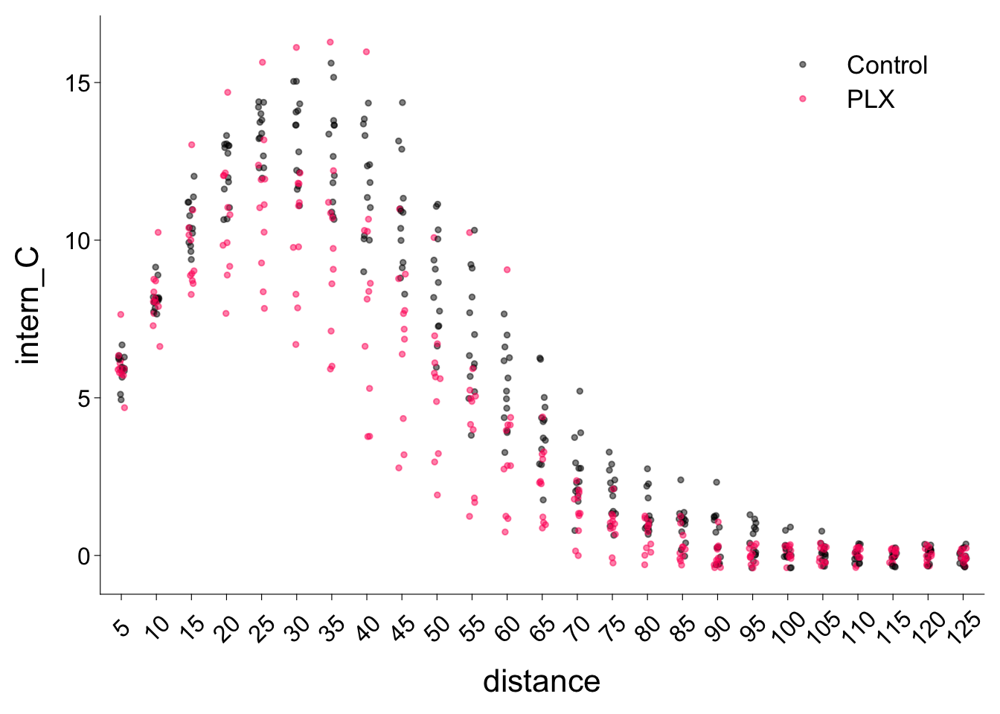
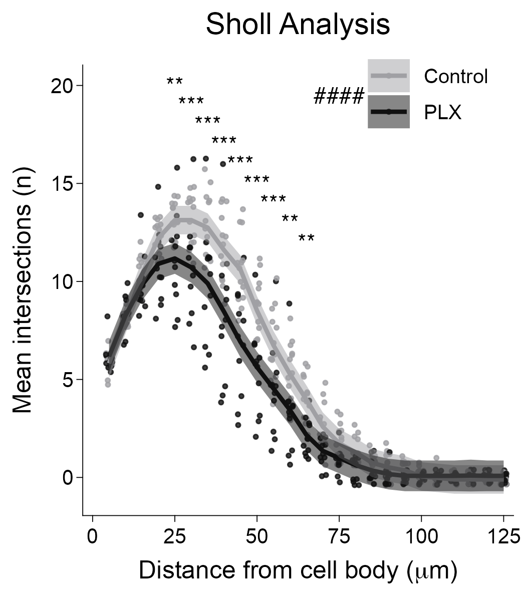

# install.packages("rempsyc")
library(rempsyc) # publication-ready t-tests in R
pkgs <- c("tidyverse", "skimr", "broom", "ggprism", "ggpubr", "effectsize", "flextable", "glmmTMB", "emmeans", "lme4", "rstatix", "DescTools")
install_if_not_installed(pkgs) # rempsyc function for easy installation
library(tidyverse) # data wrangling and ggplot2
library(skimr) # data wrangling
library(broom) # data wrangling
library(ggprism) # data visualization
library(ggpubr) # data visualization
library(effectsize) # helper package for rempsyc
library(flextable) # helper package for rempsyc
library(glmmTMB) # frequentist model fitting, specified in paper
library(emmeans) # statistics, specified in paper
library(lme4) # statistics
library(rstatix) # statistics
library(DescTools) # statisticsdata-analysis-replication
Data Analysis Replication
Introduction
Microglia are central nervous system (CNS)-resident immune cells with key roles in many neurological diseases. Microglia morphology changes in response to stimuli and is often used as a proxy for neuroinflammation and/or pathology. Mice were subjected to control or PLX (microglia depletion and repopulation) treatment, then challenged with LPS (component of bacterial membrane) to elicit a strong immune response. Brains were collected and processed for microglia imaging. This paper tested for comparability across five common ImageJ (NIH) methods used to assess microglia morphology in mice. Analyses were conducted on identical photomicrographs, as well as individual microglia cells within the photomicrographs for direct comparison. The results of the five methods indicated a lack of comparability, leading the authors to conclude that studies should combine multiple methods to achieve an accurate representation of microglia morphology.
This paper conducted five ImageJ-based analysis techniques, two on full 40x photomicrographs and three on single microglia cells isolated from those photomicrographs. These photomicrographs were stained for Ionized calcium binding adapter molecule 1 (Iba1). Iba1 is a cannonical microglial marker used to examine microglial reactivity. The techniques were applied to identify alterations in microglial morphology or percent coverage between Treatment groups (Control vs PLX) that had pharmacologically manipulated microglia following an inflammatory stimuli. The five analysis techniques were:
- Percent coverage of Iba1 staining to show how much Iba1 positive staining is present in a given photomicrograph.
- Full photomicrograph skeletal analysis to calculate an averaged number of branches, branch endpoints, and branch length among cells in the field of view.
- Fractal analysis to quantify the spatial complexity of the individually isolated microglia.
- Single cell skeletal analysis to quantify microglial ramification and cell body size.
- Sholl analysis to determine the extent of branching of individual microglia via intercepts on concentric circles around the cell body.
Authors then investigated microglial differences between control and treatment groups by fitting hierarchical generalized linear mixed models using {glmmTMB} package in R. The error distribution (beta, negative-binomial, gaussian, gamma) used depended on the scale of the response variable. All models included a fixed effect for treatment. Sholl analysis included additional effects, described below. Random effects structure was used for aggregated, single cell, and Sholl analysis data sets. Inferences were based on a combination of coefficient estimates (β) and their 95% confidence intervals, differences between predicted conditional means (∆), effect sizes (d), and p-values following Tukey’s adjustments for multiple comparisons using {emmeans} package in R.
Here, I have replicated two versions of analysis technique 1, full photomicrograph analysis of Iba1 percent coverage, and the associated visualizations (plus descriptive statistics). I also attempted to replicate the Sholl analysis and visualization.
Preliminaries
Load required packages
Tell {knitr} where to output all of the figures associated with code chunks and where to find any images to include in the “.html” output.
knitr::opts_chunk$set(fig.path = "images/")Read in data files
perc_coverage <- read_csv("data/Perc_Coverage.csv", col_names = TRUE)Rows: 225 Columns: 4
── Column specification ────────────────────────────────────────────────────────
Delimiter: ","
chr (1): Treatment
dbl (2): Coverage, Perc_Cov
time (1): Animal_ID
ℹ Use `spec()` to retrieve the full column specification for this data.
ℹ Specify the column types or set `show_col_types = FALSE` to quiet this message.head(perc_coverage)# A tibble: 6 × 4
Animal_ID Treatment Coverage Perc_Cov
<time> <chr> <dbl> <dbl>
1 01:01 Control 15.5 0.155
2 01:01 Control 18.3 0.183
3 01:01 Control 17.6 0.176
4 01:01 Control 12.9 0.129
5 01:01 Control 23.8 0.238
6 01:01 Control 17.6 0.176perc_coverage_avg <- read_csv("data/Perc_Coverage_Avg.csv", col_names = TRUE)Rows: 25 Columns: 4
── Column specification ────────────────────────────────────────────────────────
Delimiter: ","
chr (1): Treatment
dbl (2): Avg_percent, Perc_Cov
time (1): Animal_ID
ℹ Use `spec()` to retrieve the full column specification for this data.
ℹ Specify the column types or set `show_col_types = FALSE` to quiet this message.head(perc_coverage_avg)# A tibble: 6 × 4
Animal_ID Treatment Avg_percent Perc_Cov
<time> <chr> <dbl> <dbl>
1 01:01 Control 17.5 0.175
2 01:05 Control 16.7 0.167
3 01:06 Control 12.3 0.123
4 01:07 Control 17.4 0.174
5 01:08 Control 19.7 0.197
6 01:12 PLX 14.0 0.140single_cell <- read_csv("data/Single_Cell.csv", col_names = TRUE)Rows: 675 Columns: 16
── Column specification ────────────────────────────────────────────────────────
Delimiter: ","
chr (1): Treatment
dbl (14): Cohort, Region, FractalDimension(DB), Lacunarity, Density(pixels/...
time (1): Animal_ID
ℹ Use `spec()` to retrieve the full column specification for this data.
ℹ Specify the column types or set `show_col_types = FALSE` to quiet this message.head(single_cell)# A tibble: 6 × 16
Animal_ID Cohort Treatment Region `FractalDimension(DB)` Lacunarity
<time> <dbl> <chr> <dbl> <dbl> <dbl>
1 01:01 1 Control 2 1.53 0.485
2 01:01 1 Control 2 1.56 0.324
3 01:01 1 Control 1 1.42 0.734
4 01:01 1 Control 2 1.62 0.316
5 01:01 1 Control 3 1.48 0.450
6 01:01 1 Control 2 1.63 0.301
# ℹ 10 more variables: `Density(pixels/area)` <dbl>, SpanRatio <dbl>,
# Circularity <dbl>, NumberOfEndpoints <dbl>, `BranchLength(um)` <dbl>,
# NumberBranches <dbl>, body_area <dbl>, cell_area_C <dbl>,
# body_perimeter <dbl>, cell_perim_C <dbl>sholl_data <- read_csv("data/sholl_data.csv", col_names = TRUE)Rows: 599 Columns: 6
── Column specification ────────────────────────────────────────────────────────
Delimiter: ","
chr (1): Treatment
dbl (4): Cohort, Distance(um), avg_intersection_n, intern_C
time (1): Animal_ID
ℹ Use `spec()` to retrieve the full column specification for this data.
ℹ Specify the column types or set `show_col_types = FALSE` to quiet this message.head(sholl_data)# A tibble: 6 × 6
Animal_ID Cohort Treatment `Distance(um)` avg_intersection_n intern_C
<time> <dbl> <chr> <dbl> <dbl> <dbl>
1 01:01 1 Control 5 5.74 6
2 01:01 1 Control 10 7.74 8
3 01:01 1 Control 15 10.2 10
4 01:01 1 Control 20 11.2 11
5 01:01 1 Control 25 12.0 12
6 01:01 1 Control 30 12.4 12Analysis 1: Whole Average Percent Coverage (Figure 3a)
File description
Perc_Coverage_Avg.csv: File containing all microglia morphology data collected using percent coverage of Iba1 stain on photomicrographs taken from brain hemispheres.
- Animal_ID – Unique identifier for individual mice.
- Treatment – Categorical variable denoting whether each mouse received control diet or Plx5622 (PLX) diet.
- Avg_percent – The percentage of the image covered by dark pixels calculated from nine photomicrographs (3 brain slices per mouse and 3 photomicrographs (of retrosplenial, somatosensory, and entorhinal cortices) per brain slice) of Iba1-stained tissue converted to binary and then averaged to produce a single value per animal.
- Perc_Cov – The averaged percent coverage converted to a decimal.
Authors employed two approaches for generating percent coverage data: (1) The percent coverage values for the 9 photomicrographs were averaged to obtain a single percent coverage value per mouse, and (2) each of the 9 separate percent coverage values per mouse were retained as individual data points without averaging the values.
Data analysis
Step 1: Exploratory data analysis of Perc_Cov ~ Treatment
Explicit descriptive statistics were not conducted in this paper, but I used skim() to check variable types and calculate five number summaries. I also plotted the spread of the data as a histogram and visualized mean Iba1 coverage (proportion) given Treatment. I then ran a t-test comparing group means.
# Determine number of observations (nrow), number (n_unique) of Treatments
# Check variable types and 5 number summaries
skim(perc_coverage_avg)| Name | perc_coverage_avg |
| Number of rows | 25 |
| Number of columns | 4 |
| _______________________ | |
| Column type frequency: | |
| character | 1 |
| difftime | 1 |
| numeric | 2 |
| ________________________ | |
| Group variables | None |
Variable type: character
| skim_variable | n_missing | complete_rate | min | max | empty | n_unique | whitespace |
|---|---|---|---|---|---|---|---|
| Treatment | 0 | 1 | 3 | 7 | 0 | 2 | 0 |
Variable type: difftime
| skim_variable | n_missing | complete_rate | min | max | median | n_unique |
|---|---|---|---|---|---|---|
| Animal_ID | 0 | 1 | 3660 secs | 8160 secs | 02:03:00 | 24 |
Variable type: numeric
| skim_variable | n_missing | complete_rate | mean | sd | p0 | p25 | p50 | p75 | p100 | hist |
|---|---|---|---|---|---|---|---|---|---|---|
| Avg_percent | 0 | 1 | 17.74 | 3.26 | 11.64 | 15.01 | 17.83 | 19.8 | 23.24 | ▃▇▇▇▇ |
| Perc_Cov | 0 | 1 | 0.18 | 0.03 | 0.12 | 0.15 | 0.18 | 0.2 | 0.23 | ▃▇▇▇▇ |
# Change Animal_ID variable type from time to character
perc_coverage_avg$Animal_ID <- format(strptime(perc_coverage_avg$Animal_ID,
format = "%H:%M:%S"),
format = "%H:%M:%S")
# Check Animal_ID is now a character type variable
str(perc_coverage_avg$Animal_ID) chr [1:25] "01:01:00" "01:05:00" "01:06:00" "01:07:00" "01:08:00" ...# Determine how observations are distributed among subjects and treatments
with(perc_coverage_avg, table(Animal_ID, Treatment)) Treatment
Animal_ID Control PLX
01:01:00 1 0
01:05:00 1 0
01:06:00 1 0
01:07:00 1 0
01:08:00 1 0
01:12:00 0 1
01:13:00 0 1
01:15:00 0 1
01:16:00 0 1
02:01:00 1 1
02:02:00 1 0
02:03:00 1 0
02:04:00 1 0
02:05:00 1 0
02:06:00 1 0
02:07:00 1 0
02:08:00 1 0
02:09:00 0 1
02:11:00 0 1
02:12:00 0 1
02:13:00 0 1
02:14:00 0 1
02:15:00 0 1
02:16:00 0 1# Visualize Perc_Cov given Treatment
p1 <- hist(perc_coverage_avg$Perc_Cov)
p2 <- ggplot(perc_coverage_avg, aes(x = Treatment, y = Perc_Cov)) +
geom_point(aes(color = Treatment),
position = position_jitter(width = 0.06)) +
geom_boxplot(aes(fill = Treatment), width = 0.2, color = "black", alpha = 0.5) +
scale_y_continuous(limits = c(0.0, 0.3)) +
scale_color_prism("floral") +
scale_fill_prism("floral") +
guides(y = "prism_offset_minor") +
theme_prism(base_size = 16) +
theme(legend.position = "none")
p2

# Compare group means
perc_coverage_avg_treatment <- perc_coverage_avg %>%
pivot_wider(names_from = 'Treatment', values_from = 'Perc_Cov')
t.test(x = perc_coverage_avg_treatment$Control,
y = perc_coverage_avg_treatment$PLX,
mu = 0, alternative = "two.sided", var.equal = FALSE)
Welch Two Sample t-test
data: perc_coverage_avg_treatment$Control and perc_coverage_avg_treatment$PLX
t = -1.0292, df = 19.769, p-value = 0.3158
alternative hypothesis: true difference in means is not equal to 0
95 percent confidence interval:
-0.04116614 0.01397783
sample estimates:
mean of x mean of y
0.1709218 0.1845160 # nice t-test table
t.test.results <- nice_t_test(
data = perc_coverage_avg,
response = "Perc_Cov",
group = "Treatment",
warning = FALSE
)Using Welch t-test (base R's default; cf. https://doi.org/10.5334/irsp.82).
For the Student t-test, use `var.equal = TRUE`.
t_table <- nice_table(t.test.results)
t_tableDependent Variable | t | df | p | d | 95% CI |
|---|---|---|---|---|---|
Perc_Cov | -1.03 | 19.77 | .316 | -0.42 | [-1.21, 0.38] |
Note: The d is Cohen’s d, and the 95% CI is the confidence interval of the effect size (Cohen’s d). p is the p-value, df is degrees of freedom, and t is the t-value.
Step 2: Run generalized linear mixed model of Perc_Cov (Mean Iba1 coverage) given Treatment
Authors fit all models in the frequentist framework using the package {glmmTMB}.
NOTE: to fit a model in glmmTMB:
- specify a model for the conditional effects, in the standard R formula notation
- specify a model for the random effects, in the notation that is common to the {nlme} and {lme4} packages. Random effects are specified as x|g, where x is an effect and g is a grouping factor (which must be a factor variable, or a nesting of/interaction among factor variables). Formula examples:
- 1|block for a random-intercept model
- A model of crossed random effects (block and year) would be (1|block)+(1|year).
- choose the error distribution by specifying the family (family argument). Specify the function
- binomial, gaussian, poisson, Gamma from base R
- nbinom2, beta family(), betabinomial from family glmmTMB
- choose the error distribution by specifying the family (family argument).
- Distributions defined in base R and documented in ?family
- Distributions defined in ?glmmTMB::family glmmTMB
- optionally specify a zero-inflation model (ziformula argument) with fixed and/or random effects
- optionally specify a dispersion model with fixed effects
Components of generalized linear mixed model of Perc_Cov given Treatment
- Fixed effect for Treatment
- Beta error distribution, as Perc_Cov values are bounded between 0 and 1
# model
perc_cov_avg_model <- glmmTMB(Perc_Cov ~ Treatment,
family = beta_family(link = "logit"),
data = perc_coverage_avg)
summary(perc_cov_avg_model) Family: beta ( logit )
Formula: Perc_Cov ~ Treatment
Data: perc_coverage_avg
AIC BIC logLik deviance df.resid
-95.4 -91.8 50.7 -101.4 22
Dispersion parameter for beta family (): 141
Conditional model:
Estimate Std. Error z value Pr(>|z|)
(Intercept) -1.57444 0.06159 -25.56 <2e-16 ***
TreatmentPLX 0.08311 0.08746 0.95 0.342
---
Signif. codes: 0 '***' 0.001 '**' 0.01 '*' 0.05 '.' 0.1 ' ' 1Formula \[logit(\pi_i) = -1.57444 + 0.08311 \times {Treatment}\]
The coefficient for treatment is positive but not significantly different from 0. Thus, the treatment does not increase the log(odds ratio) of Perc_Cov (i.e., this measure of microglia reactivity is not significantly increased by the treatment). In this model, for every one unit change in treatment (0 for control, 1 for PLX), the log odds of Perc_Cov increases by 0.08311.
Step 3: Obtain inferential statistics using {emmeans}
Authors used {emmeans} to obtain coefficient estimates (β) and their 95% confidence intervals, differences between predicted conditional means (∆), effect sizes (d), and p-values following Tukey’s adjustments for multiple comparisons
Differences between predicted conditional means (∆) are reported in %, which I interpreted to be the absolute value in units of the response variable (% mean Iba1 coverage). I reported my estimate of the difference in units of proportion, as graphed.
# Model converted to log scale, want results on response scale
# Get point estimates (estimated marginal means) and 95% CIs
emm_r <- emmeans(perc_cov_avg_model, ~ Treatment, component = "response")
# Extract the point estimates and their 95% confidence intervals
(estimates_r <- summary(emm_r, type = "response")) Treatment emmean SE df asymp.LCL asymp.UCL
Control 0.172 0.00875 Inf 0.154 0.189
PLX 0.184 0.00936 Inf 0.165 0.202
Confidence level used: 0.95 # Get the pairwise comparisons
# estimate = difference between predicted conditional means (∆) and p-value
# negative value if control < PLX
(pairwise_r <- pairs(emm_r, adjust = "tukey")) contrast estimate SE df z.ratio p.value
Control - PLX -0.0121 0.0128 Inf -0.949 0.3424# To obtain effect size using pooled standard deviation from model,
# need difference between means on log scale
emm <- emmeans(perc_cov_avg_model, ~ Treatment)
pairwise <- pairs(emm, adjust = "tukey")
(differences <- summary(pairwise)) contrast estimate SE df z.ratio p.value
Control - PLX -0.0831 0.0875 Inf -0.950 0.3420
Results are given on the log odds ratio (not the response) scale. # effect size (d)
# d = Difference between means / Pooled standard deviation
(effect_size <- eff_size(emm,
sigma = sigma(perc_cov_avg_model),
edf = df.residual(perc_cov_avg_model))) contrast effect.size SE df asymp.LCL asymp.UCL
Control - PLX -0.00059 0.000627 Inf -0.00182 0.000639
sigma used for effect sizes: 140.9
Confidence level used: 0.95 # reporting absolute value of ∆ and d belowStep 4: Visualize Mean Iba1 coverage ~ treatment
Scatter dot plot with estimated means and 95% CI
# define custom graph colors
gray_scale <- c("#A0A0A4", "#808080")
base <- ggplot(perc_coverage_avg, aes(x = Treatment)) +
geom_point(aes(y = Perc_Cov, color = factor(Treatment)),
position = position_jitter(width = 0.06),
size = 1,
alpha = 0.7) +
geom_pointrange(data = estimates_r,
aes(y = emmean, ymin = asymp.LCL, ymax = asymp.UCL),
size = 0.4) + # Add point estimates and confidence intervals
geom_errorbar(data = estimates_r, aes(y = emmean, ymin = asymp.LCL, ymax = asymp.UCL),
position = position_dodge(width = 0.9),
width = 0.4,
linewidth = 0.7) + # Add confidence intervals bars
scale_y_continuous(limits = c(0.0, 0.3)) +
ylab("Mean Iba1 Coverage (%)") +
scale_x_discrete(labels=c("Control", "Treatment")) +
xlab(NULL)
# Need to update p.value by hand
# add p_values
p_vals <- tibble::tribble(
~group1, ~group2, ~p.value, ~y.position,
"Control", "PLX", 0.34, 0.295
)
p1 <- base +
scale_color_manual(values = gray_scale) +
theme_prism(base_size = 16,
base_fontface = "plain",
base_family = "Arial") +
theme(legend.position = "none",
axis.line = element_line(linewidth = 0.2),
axis.ticks = element_line(linewidth = 0.2),
axis.ticks.length = unit(0.1, "cm"),
axis.text.y = element_text(size = 10),
axis.text.x = element_text(vjust=1.5), # move labels closer to axis
axis.ticks.x = element_blank()) +
add_pvalue(p_vals, label = "p = {p.value}", tip.length = 0, label.size = 4, vjust=-0.3) # added p-valueSave plot
ggsave("ERC_fig3a.png",
width = 4, height = 3.5, units = "in",
path = "images/")NOTE: Comparison of Results shown at the end of Analysis 2
Analysis 2: Whole Percent Coverage
File description
Perc_Coverage.csv: File containing all microglia morphology data collected using percent coverage of Iba1 stain on photomicrographs taken from brain hemispheres.
- Animal_ID – Unique identifier for individual mice.
- Treatment – Categorical variable denoting whether each mouse received c ontrol diet or Plx5622 (PLX) diet.
- Coverage – The percentage of the image covered by dark pixels calculated from photomicrographs of Iba1-stained tissue converted to binary.
- Perc_Cov – The percent coverage converted to a decimal.
Data wrangling
Clean up data frame for hierarchical generalized linear mixed model
# Change Animal_ID variable type from time to character
perc_coverage$Animal_ID <- format(strptime(perc_coverage$Animal_ID,
format = "%H:%M:%S"),
format = "%H:%M:%S")
# Check binned number of cells per subject in perc_coverage
cells <- perc_coverage %>%
group_by(Animal_ID, Treatment) %>%
summarize(binned_cells = n())`summarise()` has grouped output by 'Animal_ID'. You can override using the
`.groups` argument.# Add binned number of cells to perc_coverage
perc_coverage <- full_join(perc_coverage, cells)Joining with `by = join_by(Animal_ID, Treatment)`Data Analysis
Step 1: Exploratory data analysis of Perc_Cov ~ Treatment
Explicit descriptive statistics were not conducted in this paper, but I used skim() to check variable types and calculate five number summaries. I also plotted the spread of the data as a histogram and visualized Iba1 coverage (proportion, Perc_Cov) given Treatment.
# Determine number of observations (nrow), number (n_unique) of Treatments
# Check variable types and 5 number summaries
skim(perc_coverage)| Name | perc_coverage |
| Number of rows | 225 |
| Number of columns | 5 |
| _______________________ | |
| Column type frequency: | |
| character | 2 |
| numeric | 3 |
| ________________________ | |
| Group variables | None |
Variable type: character
| skim_variable | n_missing | complete_rate | min | max | empty | n_unique | whitespace |
|---|---|---|---|---|---|---|---|
| Animal_ID | 0 | 1 | 8 | 8 | 0 | 24 | 0 |
| Treatment | 0 | 1 | 3 | 7 | 0 | 2 | 0 |
Variable type: numeric
| skim_variable | n_missing | complete_rate | mean | sd | p0 | p25 | p50 | p75 | p100 | hist |
|---|---|---|---|---|---|---|---|---|---|---|
| Coverage | 0 | 1 | 17.74 | 4.59 | 6.59 | 14.89 | 17.92 | 21.12 | 29.14 | ▂▅▇▆▁ |
| Perc_Cov | 0 | 1 | 0.18 | 0.05 | 0.07 | 0.15 | 0.18 | 0.21 | 0.29 | ▂▅▇▆▁ |
| binned_cells | 0 | 1 | 9.00 | 0.00 | 9.00 | 9.00 | 9.00 | 9.00 | 9.00 | ▁▁▇▁▁ |
# Determine how observations are distributed among subjects and treatments
with(perc_coverage, table(Animal_ID, Treatment)) Treatment
Animal_ID Control PLX
01:01:00 9 0
01:05:00 9 0
01:06:00 9 0
01:07:00 9 0
01:08:00 9 0
01:12:00 0 9
01:13:00 0 9
01:15:00 0 9
01:16:00 0 9
02:01:00 9 9
02:02:00 9 0
02:03:00 9 0
02:04:00 9 0
02:05:00 9 0
02:06:00 9 0
02:07:00 9 0
02:08:00 9 0
02:09:00 0 9
02:11:00 0 9
02:12:00 0 9
02:13:00 0 9
02:14:00 0 9
02:15:00 0 9
02:16:00 0 9# Visualize Perc_Cov given Treatment
p1 <- hist(perc_coverage$Perc_Cov)
p2 <- ggplot(perc_coverage, aes(x = Treatment, y = Perc_Cov)) +
geom_point(aes(color = Treatment),
position = position_jitter(width = 0.07)) +
geom_boxplot(aes(fill = Treatment), width = 0.2, color = "black", alpha = 0.5) +
scale_y_continuous(limits = c(0.0, 0.3)) +
scale_color_prism("floral") +
scale_fill_prism("floral") +
guides(y = "prism_offset_minor") +
theme_prism(base_size = 16) +
theme(legend.position = "none")
p2

Step 2: Run hierarchical generalized linear mixed model of Perc_Cov (Iba1 coverage) given Treatment
- Include fixed effect for Treatment
- Include random intercepts for Animal_ID, individual mouse, crossed with random intercepts for binned_cells, the binned number of cells that were used to obtain the outcome value (n = 9 data points per mouse).
- Random effects structure accommodated…
- hierarchical clustering of multiple aggregate data points from each mouse and
- the possibility that the number of cells used to calculate a given value might introduce unaccounted for variation.
- Beta error distribution, as Perc_Cov values are bounded between 0 and 1
perc_cov_model <- glmmTMB(Perc_Cov ~ Treatment + (1|Animal_ID) + (1|binned_cells),
family = beta_family(link="logit"),
data = perc_coverage)
summary(perc_cov_model) Family: beta ( logit )
Formula: Perc_Cov ~ Treatment + (1 | Animal_ID) + (1 | binned_cells)
Data: perc_coverage
AIC BIC logLik deviance df.resid
-796.2 -779.1 403.1 -806.2 220
Random effects:
Conditional model:
Groups Name Variance Std.Dev.
Animal_ID (Intercept) 4.738e-02 2.177e-01
binned_cells (Intercept) 1.473e-10 1.214e-05
Number of obs: 225, groups: Animal_ID, 24; binned_cells, 1
Dispersion parameter for beta family (): 107
Conditional model:
Estimate Std. Error z value Pr(>|z|)
(Intercept) -1.65878 0.06413 -25.86 < 2e-16 ***
TreatmentPLX 0.24164 0.08786 2.75 0.00595 **
---
Signif. codes: 0 '***' 0.001 '**' 0.01 '*' 0.05 '.' 0.1 ' ' 1Random intercepts do not seem to add explanatory power (very low amount of Variance in response variable explained)
Formula \[logit(\pi_i) = -1.65878 + 0.24164 \times {Treatment}\]
The coefficient for treatment is positive and is significantly different from 0. Thus, the treatment increases the log(odds ratio) of Perc_Cov (i.e., this measure of microglia reactivity is significantly increased by the treatment). In this model, for every one unit change in treatment (0 for control, 1 for PLX), the log odds of Perc_Cov increases by 0.24164.
Step 3: Obtain inferential statistics using {emmeans}
Authors used {emmeans} to obtain coefficient estimates (β) and their 95% confidence intervals, differences between predicted conditional means (∆), effect sizes (d), and p-values following Tukey’s adjustments for multiple comparisons
Differences between predicted conditional means (∆) are reported in %, which I interpreted to be the absolute value in units of the response variable (mean Iba1 coverage). I reported my estimate of the difference in units of proportion.
# Model converted to log scale, want results on response scale
# Get point estimates (estimated marginal means) and 95% CIs
emm_r <- emmeans(perc_cov_model, ~ Treatment, component = "response")
# Extract the point estimates and their 95% confidence intervals
(estimates_r <- summary(emm_r, type = "response")) Treatment emmean SE df asymp.LCL asymp.UCL
Control 0.160 0.00862 Inf 0.143 0.177
PLX 0.195 0.01027 Inf 0.175 0.215
Confidence level used: 0.95 # Get the pairwise comparisons
# estimate = difference between predicted conditional means (∆) and p-value
# negative if control < PLX
(pairwise_r <- pairs(emm_r, adjust = "tukey")) contrast estimate SE df z.ratio p.value
Control - PLX -0.0352 0.0129 Inf -2.734 0.0062# To obtain effect size using pooled standard deviation from model,
# need difference between means on log scale
emm <- emmeans(perc_cov_model, ~ Treatment)
pairwise <- pairs(emm, adjust = "tukey")
(differences <- summary(pairwise)) contrast estimate SE df z.ratio p.value
Control - PLX -0.242 0.0879 Inf -2.750 0.0060
Results are given on the log odds ratio (not the response) scale. # effect size (d)
# d = Difference between means / Pooled standard deviation
(effect_size <- eff_size(emm,
sigma = sigma(perc_cov_model),
edf = df.residual(perc_cov_model)
)
) contrast effect.size SE df asymp.LCL asymp.UCL
Control - PLX -0.00226 0.000827 Inf -0.00388 -0.000635
sigma used for effect sizes: 107.1
Confidence level used: 0.95 Step 4: Visualize Iba1 coverage ~ treatment
Scatter dot plot with estimated means and 95% CI
# set plot size
options(repr.plot.width = 2, repr.plot.height =4)
# define custom graph colors
gray_scale <- c("#A0A0A4", "#808080")
base <- ggplot(perc_coverage, aes(x = Treatment)) +
geom_point(aes(y = Perc_Cov, color = factor(Treatment)),
position = position_jitter(width = 0.07),
size = 1,
alpha = 0.7) +
geom_pointrange(data = estimates_r,
aes(y = emmean, ymin = asymp.LCL, ymax = asymp.UCL),
size = 0.4) + # Add point estimates and confidence intervals
geom_errorbar(data = estimates_r, aes(y = emmean, ymin = asymp.LCL, ymax = asymp.UCL),
position = position_dodge(width = 0.9),
width = 0.4,
linewidth = 0.7) + # Add confidence intervals bars
scale_y_continuous(limits = c(0.0, 0.3)) +
ylab("Iba1 Coverage (%)") +
scale_x_discrete(labels=c("Control", "Treatment")) +
xlab(NULL)
# Need to update p.value by hand
# add p_values
p_vals <- tibble::tribble(
~group1, ~group2, ~p.value, ~y.position,
"Control", "PLX", 0.006, 0.295
)
p1 <- base +
scale_color_manual(values = gray_scale) +
theme_prism(base_size = 16,
base_fontface = "plain",
base_family = "Arial") +
theme(legend.position = "none",
axis.line = element_line(linewidth = 0.2),
axis.ticks = element_line(linewidth = 0.2),
axis.ticks.length = unit(0.1, "cm"),
axis.text.y = element_text(size = 10),
axis.text.x = element_text(vjust=1.5), # move labels closer to axis
axis.ticks.x = element_blank()) +
add_pvalue(p_vals, label = "p = {p.value}", tip.length = 0, label.size = 4, vjust=-0.3) # added p-valueSave plot
ggsave("ERC_fig3b.png",
width = 4, height = 3.5, units = "in",
path = "images/")Analysis 1 and 2: Comparison of Results (Figure 3a-b)


Figure 3a. Full photomicrograph analyses of microglial morphology were not sensitive to differences between control and treatments groups. Mean percent coverage of Iba1 staining per animal (3 brain slices per mouse and 3 photomicrographs per brain slice were used) is shown as individual data points. Treatment n = 12 mice, Control n = 13 mice. Results are presented as point estimates with 95% confidence intervals, which were estimated from mixed effects model with beta error distribution.
Figure 3b. Photomicrograph-specific (unaveraged) percent coverage detected significantly more Iba1 staining in the treatment group compared to controls. Percent coverage of Iba1 staining, with multiple data points per subject, is shown as individual data points. Treatment n = 108 images (12 mice, 9 images/mouse), Control n = 117 images (13 mice, 9 images/mouse). Results are presented as point estimates with 95% confidence intervals, which were estimated from mixed effects model with beta error distribution.
NOTE: Mean Iba1 coverage analyzed/graphed as proportion of coverage, while mean ∆ appears to be reported by authors as |percentage of coverage|.
Analysis 3: Single Cell Sholl Analysis (bonus)
NOTE: I attempted to recreate their sholl analysis, but ran into some problems. I already included two descriptive statistical analyses, visualizations, and inferential statistical analyses, so this is bonus content.
File description
Sholl_Data.csv: File containing all microglia morphology data collected using Sholl analysis of Iba1-stained microglia randomly selected and isolated from photomicrographs taken from brain hemispheres.
- Animal_ID – Unique identifier for individual mice.
- Cohort – Categorical variable denoting the experimental cohort each mouse was in.
- Treatment – Categorical variable denoting whether each mouse received control diet or Plx5622 (PLX) diet.
- Distance(um) – Continuous variable of the Sholl circle distance from the microglial cell soma (μm).
- avg_intersection_n – Continuous variable of the average number of times a microglial branch intersected a Sholl circle.
- intern_C – Continuous variable of the average number of times a microglial branch intersected a Sholl circle rounded to the nearest whole number.
Data analysis
Data wrangling
Clean up data frame for hierarchical generalized linear mixed model
# Change Animal_ID variable type from time to character
sholl_data$Animal_ID <- format(strptime(sholl_data$Animal_ID,
format = "%H:%M:%S"),
format = "%H:%M:%S")
# Check binned number of cells per subject in sholl_data
cells <- sholl_data %>%
group_by(Animal_ID, Treatment) %>%
summarize(binned_cells = n())`summarise()` has grouped output by 'Animal_ID'. You can override using the
`.groups` argument.# Add binned number of cells to sholl_data
sholl_data <- full_join(sholl_data, cells)Joining with `by = join_by(Animal_ID, Treatment)`# Rename distance variable
sholl_data <- sholl_data %>% rename(distance = "Distance(um)")
# Make distance a factor
sholl_data$distance <- as.factor(sholl_data$distance)
str(sholl_data$distance) Factor w/ 25 levels "5","10","15",..: 1 2 3 4 5 6 7 8 9 10 ...Data Analysis
Step 1: Exploratory data analysis of intern_C ~ distance + Treatment
Explicit descriptive statistics were not conducted in this paper, but I used skim() to check variable types and calculate five number summaries. I also plotted the spread of the data as a histogram and visualized average Sholl intersections (rounded count, intern_C) by distance given Treatment.
# Determine number of observations (nrow), number (n_unique) of Treatments
# Check variable types and 5 number summaries
skim(sholl_data)| Name | sholl_data |
| Number of rows | 599 |
| Number of columns | 7 |
| _______________________ | |
| Column type frequency: | |
| character | 2 |
| factor | 1 |
| numeric | 4 |
| ________________________ | |
| Group variables | None |
Variable type: character
| skim_variable | n_missing | complete_rate | min | max | empty | n_unique | whitespace |
|---|---|---|---|---|---|---|---|
| Animal_ID | 0 | 1 | 8 | 8 | 0 | 23 | 0 |
| Treatment | 0 | 1 | 3 | 7 | 0 | 2 | 0 |
Variable type: factor
| skim_variable | n_missing | complete_rate | ordered | n_unique | top_counts |
|---|---|---|---|---|---|
| distance | 0 | 1 | FALSE | 25 | 5: 24, 10: 24, 15: 24, 20: 24 |
Variable type: numeric
| skim_variable | n_missing | complete_rate | mean | sd | p0 | p25 | p50 | p75 | p100 | hist |
|---|---|---|---|---|---|---|---|---|---|---|
| Cohort | 0 | 1 | 1.62 | 0.48 | 1 | 1.00 | 2.00 | 2.00 | 2.00 | ▅▁▁▁▇ |
| avg_intersection_n | 0 | 1 | 4.72 | 4.80 | 0 | 0.19 | 2.89 | 8.87 | 16.37 | ▇▂▂▂▁ |
| intern_C | 0 | 1 | 4.69 | 4.83 | 0 | 0.00 | 3.00 | 9.00 | 16.00 | ▇▂▂▂▁ |
| binned_cells | 0 | 1 | 24.96 | 0.20 | 24 | 25.00 | 25.00 | 25.00 | 25.00 | ▁▁▁▁▇ |
# Determine how observations are distributed among subjects and treatments
with(sholl_data, table(Animal_ID, Treatment)) Treatment
Animal_ID Control PLX
01:01:00 25 0
01:05:00 25 0
01:06:00 25 0
01:07:00 25 0
01:08:00 25 0
01:12:00 0 25
01:13:00 0 25
01:15:00 0 25
01:16:00 0 25
02:01:00 25 25
02:02:00 25 0
02:03:00 25 0
02:04:00 25 0
02:05:00 25 0
02:06:00 25 0
02:07:00 25 0
02:08:00 25 0
02:09:00 0 24
02:11:00 0 25
02:12:00 0 25
02:13:00 0 25
02:15:00 0 25
02:16:00 0 25# Visualize intern_C by Distance(um) given Treatment
p1 <- ggplot(sholl_data, aes(x = distance, y = intern_C, group = Treatment)) +
geom_point(aes(color = Treatment),
size = 1,
position = position_jitter(width = 0.1),
alpha = 0.5) +
scale_color_prism("colorblind_safe") +
theme_prism(base_size = 16,
base_fontface = "plain",
base_family = "Arial") +
theme(legend.position = c(0.85, 0.9),
axis.line = element_line(linewidth = 0.2),
axis.ticks = element_line(linewidth = 0.2),
axis.text.y = element_text(size = 12),
axis.text.x = element_text(size = 12, angle = 45),
axis.ticks.length = unit(0.1, "cm"))
p1
Step 2: Attempt to run hierarchical generalized linear mixed model of average Sholl intersections (rounded count, intern_C) by distance given Treatment.
This was very hard. I have not yet figured out how they got their point estimates / if this model is the same as theirs.
- Include fixed effect for
- distance, distance from cell body
- Treatment
- two-way interaction between Treatment and distance
- Include random intercepts for Animal_ID, individual mouse
- for hierarchical clustering of multiple data points from each mouse (n = 25 distances at which the mean number of intersections was calculated per mouse)
- Negative-binomial error distribution, as intern_C is an overdispersed count variable
Authors also stated that they included a natural cubic spline on distance, as they expected this effect to be nonlinear. I think this can be added to the model using {splines} and including a main effect of ns(Distance(um), 3)
Not working after converting distance to a factor…
Show the code
# base model, not running with distance as factor
sholl_model <- glmmTMB(intern_C ~ distance * Treatment + (1|Animal_ID),
family = nbinom2(), # quadratic
data = sholl_data)
summary(sholl_model)
# modeling nonlinear relationship
library(splines)
sholl_model_sp <- glmmTMB(intern_C ~ distance * Treatment + ns(distance, 3) + (1|Animal_ID),
family = nbinom2(link = "log"), # quadratic
data = sholl_data)
summary(sholl_model_sp)Step 3: Attempt to obtain inferential statistics using {emmeans}
Authors used {emmeans} to obtain coefficient estimates (β) and their 95% confidence intervals, differences between predicted conditional means (∆), effect sizes (d), and p-values following Tukey’s adjustments for multiple comparisons
This is not right, am not getting values across multiple distances
Show the code
# Model converted to log scale, want results on response scale
# Get point estimates (estimated marginal means) and 95% CIs
emm_r <- emmeans(sholl_model, ~ Treatment, var = "distance", component = "response")
# Extract the point estimates and their 95% confidence intervals
(estimates_r <- summary(emm_r, type = "response"))
# Get the pairwise comparisons
# estimate = difference between predicted conditional means (∆) and p-value
# negative if control < PLX
(pairwise_r <- pairs(emm_r, adjust = "tukey"))
# To obtain effect size using pooled standard deviation from model,
# need difference between means on log scale
emm <- emmeans(sholl_model, c("Treatment", "distance"))
pairwise <- pairs(emm, adjust = "tukey")
(differences <- summary(pairwise))
# effect size (d)
# d = Difference between means / Pooled standard deviation
(effect_size <- eff_size(emm,
sigma = sigma(sholl_model),
edf = df.residual(sholl_model)
)
)Step 4: Running alternative model of average Sholl intersections (rounded count, intern_C) by distance given Treatment.
There is a significant interaction between distance and Treatment, so restricting comparisons to Treatment within each distance is just a starting point.
# non-linear modeling
sholl_model <- nlme::lme(intern_C ~ distance + Treatment + distance:Treatment,
random = ~ 1 | Animal_ID,
data = sholl_data)
anova(sholl_model) numDF denDF F-value p-value
(Intercept) 1 527 733.4385 <.0001
distance 24 527 468.5021 <.0001
Treatment 1 527 22.1407 <.0001
distance:Treatment 24 527 8.3140 <.0001sholl_modelem <- emmeans::emmeans(sholl_model, pairwise ~ Treatment | distance) # point estimates given Treatment given distanceExpand to show print out of sholl_modelem
Show the code
print(sholl_modelem)
## $emmeans
## distance = 5:
## Treatment emmean SE df lower.CL upper.CL
## Control 5.8215 0.351 22 5.094 6.549
## PLX 6.1725 0.378 22 5.389 6.956
##
## distance = 10:
## Treatment emmean SE df lower.CL upper.CL
## Control 8.0523 0.351 22 7.325 8.780
## PLX 8.2634 0.378 22 7.480 9.047
##
## distance = 15:
## Treatment emmean SE df lower.CL upper.CL
## Control 10.3600 0.351 22 9.632 11.088
## PLX 9.8089 0.378 22 9.026 10.592
##
## distance = 20:
## Treatment emmean SE df lower.CL upper.CL
## Control 12.2061 0.351 22 11.479 12.934
## PLX 10.8998 0.378 22 10.117 11.683
##
## distance = 25:
## Treatment emmean SE df lower.CL upper.CL
## Control 13.1292 0.351 22 12.402 13.857
## PLX 11.1725 0.378 22 10.389 11.956
##
## distance = 30:
## Treatment emmean SE df lower.CL upper.CL
## Control 13.1292 0.351 22 12.402 13.857
## PLX 10.7180 0.378 22 9.935 11.501
##
## distance = 35:
## Treatment emmean SE df lower.CL upper.CL
## Control 12.7446 0.351 22 12.017 13.472
## PLX 9.8998 0.378 22 9.117 10.683
##
## distance = 40:
## Treatment emmean SE df lower.CL upper.CL
## Control 11.5908 0.351 22 10.863 12.318
## PLX 8.4452 0.378 22 7.662 9.228
##
## distance = 45:
## Treatment emmean SE df lower.CL upper.CL
## Control 10.5908 0.351 22 9.863 11.318
## PLX 6.8998 0.378 22 6.117 7.683
##
## distance = 50:
## Treatment emmean SE df lower.CL upper.CL
## Control 8.5138 0.351 22 7.786 9.241
## PLX 5.6271 0.378 22 4.844 6.410
##
## distance = 55:
## Treatment emmean SE df lower.CL upper.CL
## Control 6.7446 0.351 22 6.017 7.472
## PLX 4.5362 0.378 22 3.753 5.319
##
## distance = 60:
## Treatment emmean SE df lower.CL upper.CL
## Control 5.2831 0.351 22 4.555 6.011
## PLX 3.4452 0.378 22 2.662 4.228
##
## distance = 65:
## Treatment emmean SE df lower.CL upper.CL
## Control 3.9754 0.351 22 3.248 4.703
## PLX 2.1725 0.378 22 1.389 2.956
##
## distance = 70:
## Treatment emmean SE df lower.CL upper.CL
## Control 2.5908 0.351 22 1.863 3.318
## PLX 1.3543 0.378 22 0.571 2.138
##
## distance = 75:
## Treatment emmean SE df lower.CL upper.CL
## Control 1.7446 0.351 22 1.017 2.472
## PLX 0.9907 0.378 22 0.207 1.774
##
## distance = 80:
## Treatment emmean SE df lower.CL upper.CL
## Control 1.2831 0.351 22 0.555 2.011
## PLX 0.6271 0.378 22 -0.156 1.410
##
## distance = 85:
## Treatment emmean SE df lower.CL upper.CL
## Control 0.7446 0.351 22 0.017 1.472
## PLX 0.3543 0.378 22 -0.429 1.138
##
## distance = 90:
## Treatment emmean SE df lower.CL upper.CL
## Control 0.5138 0.351 22 -0.214 1.241
## PLX 0.1725 0.378 22 -0.611 0.956
##
## distance = 95:
## Treatment emmean SE df lower.CL upper.CL
## Control 0.3600 0.351 22 -0.368 1.088
## PLX 0.0816 0.378 22 -0.702 0.865
##
## distance = 100:
## Treatment emmean SE df lower.CL upper.CL
## Control 0.0523 0.351 22 -0.675 0.780
## PLX 0.0816 0.378 22 -0.702 0.865
##
## distance = 105:
## Treatment emmean SE df lower.CL upper.CL
## Control -0.0246 0.351 22 -0.752 0.703
## PLX 0.0816 0.378 22 -0.702 0.865
##
## distance = 110:
## Treatment emmean SE df lower.CL upper.CL
## Control -0.1015 0.351 22 -0.829 0.626
## PLX 0.0816 0.378 22 -0.702 0.865
##
## distance = 115:
## Treatment emmean SE df lower.CL upper.CL
## Control -0.1015 0.351 22 -0.829 0.626
## PLX 0.0973 0.391 22 -0.714 0.908
##
## distance = 120:
## Treatment emmean SE df lower.CL upper.CL
## Control -0.1015 0.351 22 -0.829 0.626
## PLX 0.0816 0.378 22 -0.702 0.865
##
## distance = 125:
## Treatment emmean SE df lower.CL upper.CL
## Control -0.1015 0.351 22 -0.829 0.626
## PLX 0.0816 0.378 22 -0.702 0.865
##
## Degrees-of-freedom method: containment
## Confidence level used: 0.95
##
## $contrasts
## distance = 5:
## contrast estimate SE df t.ratio p.value
## Control - PLX -0.3510 0.482 527 -0.729 0.4665
##
## distance = 10:
## contrast estimate SE df t.ratio p.value
## Control - PLX -0.2111 0.482 527 -0.438 0.6613
##
## distance = 15:
## contrast estimate SE df t.ratio p.value
## Control - PLX 0.5511 0.482 527 1.144 0.2531
##
## distance = 20:
## contrast estimate SE df t.ratio p.value
## Control - PLX 1.3064 0.482 527 2.712 0.0069
##
## distance = 25:
## contrast estimate SE df t.ratio p.value
## Control - PLX 1.9567 0.482 527 4.062 0.0001
##
## distance = 30:
## contrast estimate SE df t.ratio p.value
## Control - PLX 2.4113 0.482 527 5.006 <.0001
##
## distance = 35:
## contrast estimate SE df t.ratio p.value
## Control - PLX 2.8448 0.482 527 5.906 <.0001
##
## distance = 40:
## contrast estimate SE df t.ratio p.value
## Control - PLX 3.1455 0.482 527 6.530 <.0001
##
## distance = 45:
## contrast estimate SE df t.ratio p.value
## Control - PLX 3.6910 0.482 527 7.663 <.0001
##
## distance = 50:
## contrast estimate SE df t.ratio p.value
## Control - PLX 2.8868 0.482 527 5.993 <.0001
##
## distance = 55:
## contrast estimate SE df t.ratio p.value
## Control - PLX 2.2085 0.482 527 4.585 <.0001
##
## distance = 60:
## contrast estimate SE df t.ratio p.value
## Control - PLX 1.8378 0.482 527 3.816 0.0002
##
## distance = 65:
## contrast estimate SE df t.ratio p.value
## Control - PLX 1.8029 0.482 527 3.743 0.0002
##
## distance = 70:
## contrast estimate SE df t.ratio p.value
## Control - PLX 1.2364 0.482 527 2.567 0.0105
##
## distance = 75:
## contrast estimate SE df t.ratio p.value
## Control - PLX 0.7539 0.482 527 1.565 0.1181
##
## distance = 80:
## contrast estimate SE df t.ratio p.value
## Control - PLX 0.6560 0.482 527 1.362 0.1738
##
## distance = 85:
## contrast estimate SE df t.ratio p.value
## Control - PLX 0.3903 0.482 527 0.810 0.4182
##
## distance = 90:
## contrast estimate SE df t.ratio p.value
## Control - PLX 0.3413 0.482 527 0.709 0.4789
##
## distance = 95:
## contrast estimate SE df t.ratio p.value
## Control - PLX 0.2784 0.482 527 0.578 0.5635
##
## distance = 100:
## contrast estimate SE df t.ratio p.value
## Control - PLX -0.0293 0.482 527 -0.061 0.9515
##
## distance = 105:
## contrast estimate SE df t.ratio p.value
## Control - PLX -0.1062 0.482 527 -0.221 0.8255
##
## distance = 110:
## contrast estimate SE df t.ratio p.value
## Control - PLX -0.1831 0.482 527 -0.380 0.7039
##
## distance = 115:
## contrast estimate SE df t.ratio p.value
## Control - PLX -0.1989 0.492 527 -0.404 0.6862
##
## distance = 120:
## contrast estimate SE df t.ratio p.value
## Control - PLX -0.1831 0.482 527 -0.380 0.7039
##
## distance = 125:
## contrast estimate SE df t.ratio p.value
## Control - PLX -0.1831 0.482 527 -0.380 0.7039
##
## Degrees-of-freedom method: containment# get data frame of point estimates and CIs
sholl_emm <- summary(sholl_modelem$emmeans)
sholl_posthoc_tvals <- sholl_data %>%
group_by(distance) %>%
rstatix::emmeans_test(intern_C ~ Treatment, model = sholl_model) %>%
mutate(p.adj = p.adjust(p, method = 'bonferroni'),
p.adj.signif = case_when(p.adj < 0.001 ~ "***",
p.adj < 0.01 ~ "**",
p.adj < 0.05 ~ "*",
p.adj >= 0.05 ~ '')) %>%
select(group1, group2, distance, df, statistic, p, p.adj, p.adj.signif)
sholl_subject <- sholl_data %>%
group_by(Animal_ID, distance, Treatment) %>%
summarise(mean_inter = mean(intern_C))`summarise()` has grouped output by 'Animal_ID', 'distance'. You can override
using the `.groups` argument.Step 5: Visualize Branch intersections ~ distance + Treatment
Scatter dot plot with estimated means and 95% CI
This was very tricky but I kind of did it!
# p values
p_vals <- sholl_posthoc_tvals %>%
select(group1, group2, distance, p.adj.signif) %>%
filter(p.adj.signif != "") %>%
mutate(y.position = 20:12)
# define custom graph colors
gray_scale <- c("#A0A0A4", "#101010")
base <- ggplot(sholl_data,
aes(x = distance, y = intern_C, group = Treatment)) +
geom_point(aes(color = factor(Treatment)),
position = position_jitter(width = 0.2),
size = 0.7,
alpha = 0.8) +
geom_line(data = sholl_emm, # Add emm
aes(y = emmean,
color = factor(Treatment)),
linewidth = 1) +
geom_ribbon(data = sholl_emm, # Add emm CIs
aes(y = emmean, ymin = lower.CL, ymax = upper.CL,
fill = factor(Treatment)),
alpha = 0.5) +
scale_x_discrete(limits = c("0", levels(sholl_data$distance)),
breaks = c("0", as.character(seq(25, 125, by = 25)))) +
scale_y_continuous(limits = c(-.9, 20)) +
ylab("Mean intersections (n)") +
xlab(expression(paste("Distance from cell body (",mu,"m)"))) +
ggtitle("Sholl Analysis") +
annotate("text", x = p_vals$distance,
y = p_vals$y.position,
label = p_vals$p.adj.signif) +
annotate("text", x = 16, y = 19.5, label = "####")
p1 <- base +
scale_color_manual(values = gray_scale) +
scale_fill_manual(values = gray_scale) +
theme_prism(base_size = 12,
base_fontface = "plain",
base_family = "Arial") +
theme(legend.position = c(0.8,0.95),
axis.line = element_line(linewidth = 0.2),
axis.ticks = element_line(linewidth = 0.2),
axis.text.y = element_text(size = 10),
axis.text.x = element_text(size = 10),
axis.ticks.length = unit(0.1, "cm"))Save plot
ggsave("ERC_fig4k.png",
width = 3.5, height = 4, units = "in",
path = "images/")Comparison of Results


Sholl analysis detected that microglia from the treatment group had fewer and less expansive branches than controls. Microglia from the treatment group had fewer branches intersecting the Sholl analysis circles (concentric circles every 5 μm from the cell body) than controls. Treatment n = 324 microglia (12 mice, 27 microglia/mouse), Control n = 345 microglia (13 mice, 27 microglia/mouse) (Fig. 4k).
Discussion and Reflection
I successfully replicated the inferential statistical analyses and visualizations conducted on full photomicrographs of Iba1 percent coverage, both averaged by subject (Analysis 1) and including multiple photomicrographs per subject (Analysis 2). This consisted of running generalized linear mixed models with beta error distributions and calculating estimated means (and difference between means) and confidence intervals of the point estimates, and effect sizes. My values for differences between estimated means and effect sizes were negative, as the control value was smaller than the treatment (plx) value, but I took the absolute value for comparison (as I believe the authors did). It seems the authors converted the differences between estimated means to units of percent, while I left mine in units of proportion, as graphed.
Authors stated the photomicrograph-averaged mean percent coverage (Analysis 1) had a 70% smaller effect size than the photomicrograph-specific percent coverage (Analysis 2), which I verified (100 - ((0.0006 / 0.002) * 100) = 70%). However, unlike the authors I noted that the actual value of the effect size is still very small (0.002), which means the difference is negligible even if it is statistically significant.
Overall the DRYAD raw dataset was well described and organized for loading into R, and the statistical analyses were well described in the methods. However, I was not able to attempt replication of fractal analysis, as that data set was not available. I did have to transform the Animal_ID variable from type time to character, and it was not clear what each part (XX:XX:XX) of the Animal_ID meant. I also assumed the beta error distribution was transformed to log odds ratio scale. I was not familiar with this type of error distribution (nor {glmmTMB}), so it took some time to figure that out, and to use {emmeans} to get the inferential statistics. It would have been helpful if the authors had included the equation for each model in either the DRYAD dataset or methods section of the paper. They also did not incldue any R code, which obvisouly would have been immensely helpful for exact replication of analyses.
The visualizations were more straightforward than the inferential statistical analyses, but it took a lot of customization to match the aesthetics of the paper. I think I got pretty close!
As the original paper did not report any descriptive statistics, I was not able to compare my descriptive statistics to theirs, but doing an exploratory data analysis prior to generalized linear mixed modeling certainly helped to work out some of the kinks and get familiar with the data sets.
For an additional challenge, I also attempted to replicate their Sholl analysis. This was not as straightforward, and I was not successful, likely due to the introduction of nonlinear effects. I was able to partially replicate their visualization, showing point estimates and CIs rather than a model-derived curve and CI.
This assignment was very challenging, but I did learn a lot about data wrangling, generalized linear modeling, and visualization (as well as Quarto aesthetics).